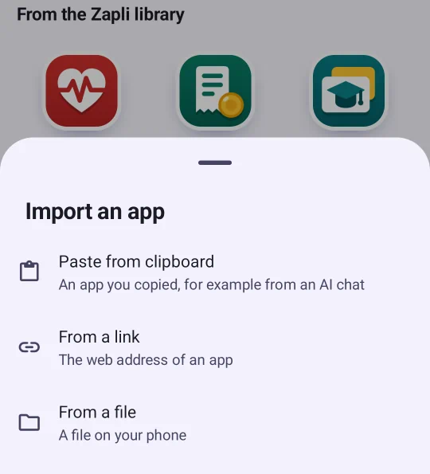

What you get
An app made from your own words: a tracker, a list, a calculator, a small game. It lives in Zapli next to the apps of the Zapli library.
- It works offline. The app runs on your phone and needs no internet.
- Your data stays on your phone. What you enter is kept in Zapli’s private storage on your phone. The prompt asks your AI to keep it in Zapli’s own store, so it goes with Zapli’s backups once they arrive in a later version.
- No ads, no tracking, no account. Zapli has none, and it refuses every connection an app asks for. Apps with their own code have one caveat, in Step 3.
- Phone features only with your OK. An app can use only the features its install review lists, and Zapli asks you before it first uses the camera, notifications and the like.
- Yours to change. Ask your AI for a change, import the new version, and your data stays.
Your AI picks one of two kinds of app, so you don’t have to: a data app that Zapli draws with its own screens (lists, forms, reminders), or a web app, a page your AI draws itself (games, drawing, custom charts).
Step 1: Ask your AI
Start a new chat with an AI that can write code. Paste the Zapli prompt first: it tells the AI how Zapli apps are made and what they may do. Then describe your app, in the same message or the next one.
The Zapli prompt
About 30,000 characters of instructions for your AI. Paste all of it.
What’s in it?
How to choose between Zapli’s two kinds of app, the rules every Zapli app follows (offline first, no ads, permissions), the file format, how you install the app, and two small examples. It is plain text: you can read all of it before you use it.
Describe your app
- What it is for, in a sentence or two.
- What to keep for each thing in it: for a plant, its name, its room and how often it needs water.
- What you want to see: a list, today’s total, a chart.
- Reminders or phone features you want, such as the camera or vibration.
- The app’s language, if it isn’t English.
- Start small. You can add more later.
Examples
-
Make a Zapli app to look after my houseplants. For each plant I want its name, its room and how many days it can go without water. Show which plants need water today, let me mark one as watered, and remind me every morning at 8:00.
-
Make a Zapli app that splits a restaurant bill. I enter the total, pick a tip of 0, 10, 15 or 20 percent and the number of people, and it shows what each person pays, rounded to cents so the shares add up to the total.
-
Make a Zapli memory game for a six-year-old: 12 big cards with simple animal pictures drawn in the app, a short sound when two cards match, and the best time saved.
The prompt asks the AI to tell you which kind of app it made, what the app asks for and how to install it, and to call the app unvalidated. That is normal: Zapli checks the app when you import it.
Step 2: Get the app out of the chat
The app is one file in the AI’s answer: usually a web page that starts with
<!doctype html>, or a data app that starts with {. An app with
pictures or sounds may come as a .zapli file to download instead. Bring the whole
file to Zapli in one of these ways.
-
Copy it
Use the chat’s copy button on the app’s code, and make sure you get all of it. In Zapli, use Paste from clipboard.
Best when you chat on your phone.
-
Download it
If the chat offers Download, save the file. In Zapli, use From a file, or open the file with Zapli.
On a computer, send the file to your phone first, for example by email or a cloud drive.
-
Link to it
Put the file where it gets a public link to the file itself, such as a GitHub gist. In Zapli, use From a link.
Anyone with the link can read the file, so keep personal details out of the app itself.
Why a chat’s share link doesn’t work
A chat’s share link opens a page of that chat service, often only after you sign in. It is not the app’s file, and Zapli doesn’t download from chat services’ links. If you give Zapli one, it says so and tells you what to do instead: copy or download the app.
What works: a link to a public GitHub gist, a link to a file in a public GitHub repository,
or any https:// link that downloads the file itself. A website that loads its
code from other files doesn’t work: Zapli takes an app as one file.
Step 3: Import it in Zapli
- Open Zapli and tap Import. With no apps yet, it is on the welcome screen; otherwise it floats over your apps.
- Choose how the app comes: Paste from clipboard, From a link or From a file.
- For a link, paste it and tap Next. Zapli shows the site and the whole link and asks “Download the app from …?” Nothing is downloaded until you tap Download.
- Zapli checks the app and shows its install review: what the app is and what it may do. Read it, then tap Install.

You can also open a downloaded file with Zapli, or share the file or the code to Zapli from another app.
What the install review tells you

- Unreviewed “Install only if you trust where it came from.”
- Nobody has checked this app: not Zapli, not anyone else. Every app you import says so, even the one you just made. Install only apps you made yourself or got from someone you trust.
- Unknown author
- Zapli can’t tell who made a file you import.
- Contains its own code
- The app runs its own JavaScript. Every web app does.
- Cannot connect to the internet.
- The app has no way to reach the internet.
- Zapli can’t fully stop this app’s own code from reaching the internet.
- Shown instead for an imported app whose code runs as a web page. Zapli refuses every connection the app asks for and narrows the other ways out, but it can’t promise more for such code. One more reason to install only what you trust.
- What it can do
- The phone features the app may use, each with the app’s own reason. “Asks the first time you use it” means Zapli asks you then.
- Where your data goes
- What the app could send off your phone, and where.
- Background
- What it does while it is closed, such as reminders, and how many notifications it may show a day.
- Notes
- Details behind a tap, such as what its code tries that Zapli blocks. Those parts may not work.
- Downloaded from …
- Where an app from a link came from. It tells you the place, not whether the app is safe.
Permissions are asked when needed
When the app first wants a phone feature, such as the camera or notifications, Zapli asks you in its own card, with Allow and Don’t allow. Android may ask as well. To change your answer later, press and hold the app, then tap Permissions.
Change it later
- Ask the AI in the same chat, for example: “Add a notes field to each plant.” In a new chat, paste the Zapli prompt and your app’s file first.
- The AI gives you the whole new file. The prompt tells it to keep the app’s id and raise its version number: that is how Zapli knows it is a new version of your app.
- Import it the same way. Zapli recognises the app and asks whether to update it.
- The update review lists what is new: any new permissions (or “Asks for nothing new.”) and what happens to your data (“Your data stays as it is.” when nothing changes). When an update does change how your data is kept, Zapli backs it up first and puts it back if the update fails.
- Tap Update. Your data, permissions and home-screen shortcut stay with the app.

- Install as a separate copy gives you a second app with its own, empty data.
- If Zapli says the file has the same version as the installed app, ask your AI to raise the version number.
- Zapli can’t tell who made an imported file, so update only with a file from the same place as the app you have.
- A web page made without the Zapli prompt is named after its title. Keep the title the same, and Zapli offers the next version as an update.
When something goes wrong
“This app has errors”
Zapli found mistakes in the file and didn’t install it. Tap Copy errors for your AI, paste them into the chat with the AI that made the app, and ask for the whole fixed file. Then import that. One or two rounds are common.

“This cannot be imported”
The file is too big, isn’t text Zapli can read, or is empty. Check that you copied the whole app, and see the limits below.
“Can’t be installed yet”
The app needs something this version of Zapli doesn’t have. Ask your AI for a version without it, or check for a Zapli update.
The app installs, but something doesn’t work
Tell your AI exactly what you tapped and what happened. Apps can’t use the internet in today’s Zapli, and not every phone feature is open to every kind of app yet; your AI can work around both. The install review’s Notes list what Zapli blocked.
The AI made something else
If you got several loose files or a React component instead of a page, ask: “Please make it one complete HTML file for Zapli.”
Limits
| What you import | Up to |
|---|---|
| Text you paste | 2 MB |
One file (.html or .json) |
10 MB |
A .zapli package, an app of many files |
20 MB |
Most apps an AI writes are far smaller. An app with pictures, sounds or many files comes as a
.zapli package, a zip of its files: download it and import it with
From a file.
Put your app in the Zapli library
The Zapli library holds the apps that come with Zapli, for everyone. If you would like to offer yours, its README says how. Library apps are original work, use made-up sample data, work in light and dark, and a maintainer checks each one before it reaches anyone’s phone. You need a GitHub account, because apps come in as pull requests.